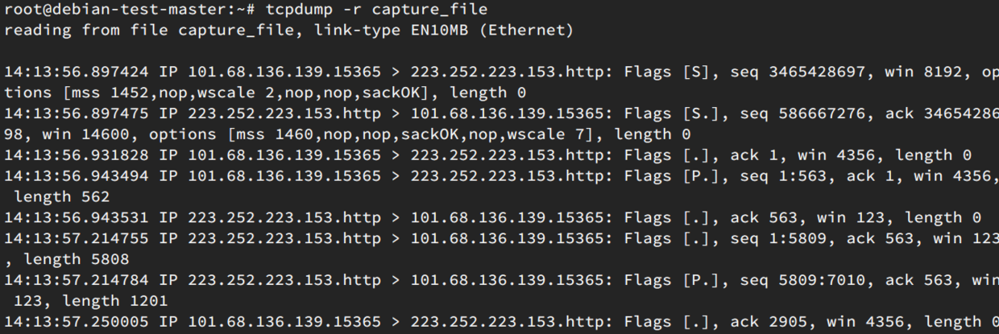
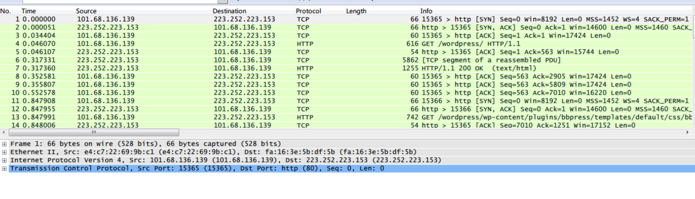
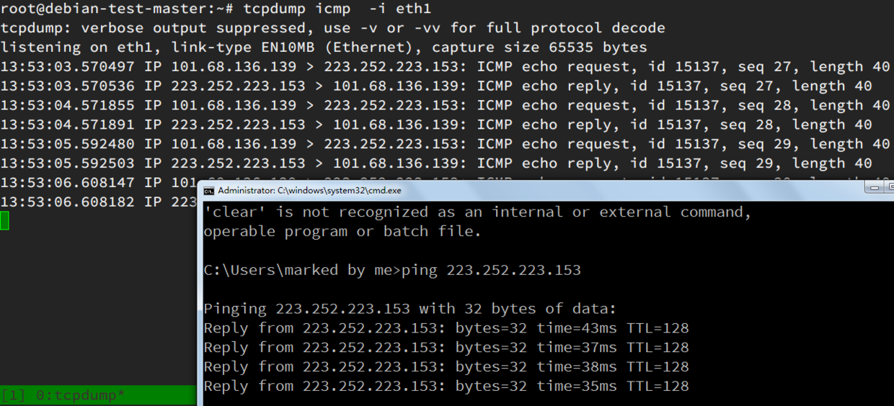
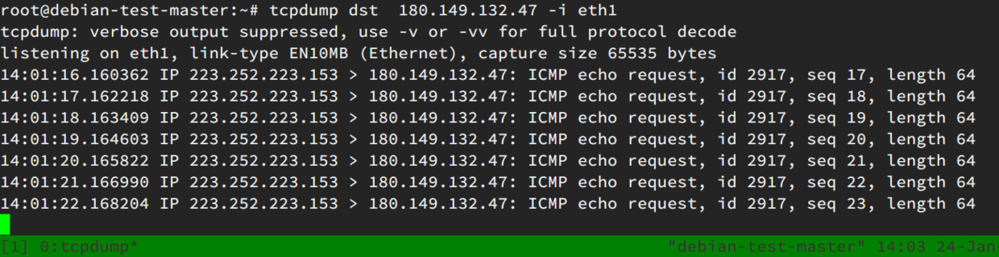
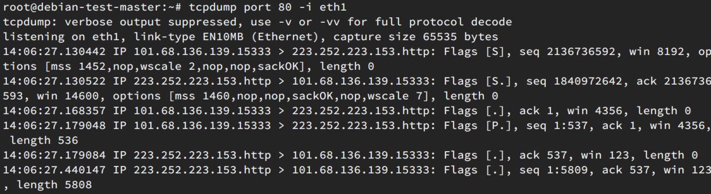

学习tcpdump
Contents
之前一直用gui的wireshark进行抓包，现在学习一下命令行的tcpdump，做个记录。
简介
tcpdump是一个抓包工具。它能够监听、记录通过某一个主机进出的网络流量。并且可以保存到文件，或者再从文件读取抓下来的数据包。它保存下来的包也可以导入到wireshark里面，利用gui工具进行查看（一般说来在gui里面查看过滤比较方便）。当然了，很重要的一点是，抓取的时候你就能设置各种各样的过滤器，免得你在查看的时候如同大海捞针，在海量数据里面寻找有用信息。
使用
首先，使用tcpdump要使用root登录或者sudo权限。这也很好理解，整台机器的流量都能看到了，要是任何用户都能看到，就没秘密可言了。
tcpdump如果不加任何参数，他会抓网络设备中第一个设备的包（不包括lo），并且打印出每个包的简短信息。
-nn选项：
意思是说当tcpdump遇到协议号或端口号时，不要将这些号码转换成对应的协议名称或端口名称。比如，众所周知21端口是FTP端口，我们希望显示21，而非tcpdump自作聪明的将它显示成FTP。
-X选项：
告诉tcpdump命令，需要把协议头和包内容都原原本本的显示出来（tcpdump会以16进制和ASCII的形式显示），这在进行协议分析时是绝对的利器。
-t选项
输出不打印时间戳
-F选项
指定过滤表达式所在的文件
-c选项：
是Count的含义，这设置了我们希望tcpdump帮我们抓几个包。我设置的是1，所以tcpdump不会帮我再多抓哪怕一个包回来。
是否 verbose
级别
|
|
没有-vvvv
-s选项
限定包的大小。 默认每个包存68 bytes。加上-s选项，调整这个参数。
|
|
如果 -s 0，说明把存全量。
指定协议
proto。可以包括tcp，udp，icmp等，但是可以不加proto。
|
|
协议总共有如下
|
|
包大小过滤
|
|
也可以这样使用
|
|
写入文件
-w参数写入文件，-r参数从文件中读取
|
|

wireshark也可以导入查看

富有创造力
运算符
|
|
过滤表达式
过滤表达式大体可以分成三种过滤条件，“类型”、“方向”和“协议”
详细可以看
|
|
-i 参数
指定eth0 还是 eth1
|
|
只抓icmp的包

-i any 监听所有
host
只抓某个host的包
|
|
因为ssh连着，会有很多的包
src dst
指定目标地址，源地址
|
|
例如这个是百度服务器对ping的回应

port
指定port
|
|
例如看ssh链接的信息，用22
80端口 
参数的组合
|
|
port端口范围
|
|
参考资料
https://danielmiessler.com/study/tcpdump/ www.alexonlinux.com/tcpdump-for-dummies
Author smasterfree
LastMod 2015-10-03